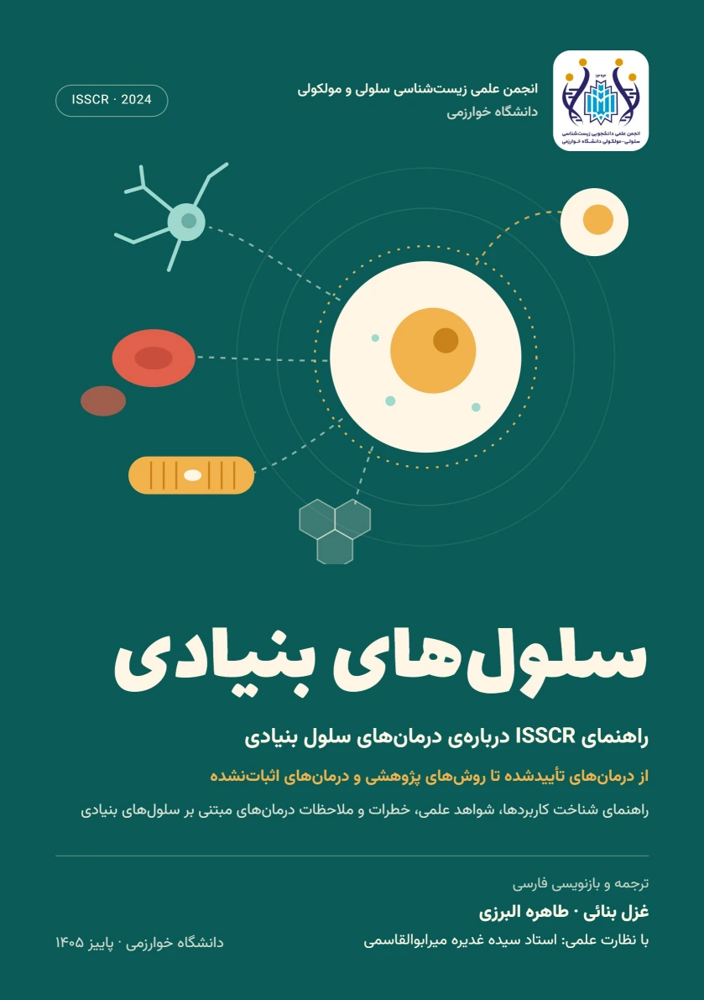

دانش روشنتر، تصمیم آگاهانهتر
سلولهای
سلولهای
بنیادی
پیش از انتخاب درمان،
آگاهانه تصمیم بگیرید.
از امیدهای پژوهش تا واقعیت درمان؛ راهنمایی برای بیماران، خانوادهها و همه کسانی که میخواهند با شناخت شواهد علمی، گزینههای درمانی را بهتر بشناسند.

ترجمه و بازنویسی فارسیراهنمای ISSCR · 2024
یک راهنمای علمی، برای انتخابی آگاهانهاز اینجا شروع کنید
درباره این راهنماهمهی درمانهای
همهی درمانهای
سلول بنیادی
اثباتشده نیستند.
این کتاب کمک میکند پیش از تصمیمگیری، پرسشهای بهتری بپرسید.
پژوهشهای سلولهای بنیادی چشماندازهای تازهای پیش روی علم قرار دادهاند. شناخت تفاوت میان درمانهای تأییدشده، روشهای در دست پژوهش و درمانهای اثباتنشده، بخشی از یک تصمیم آگاهانه است.
این راهنما، ترجمه و بازنویسی فارسی راهنمای انجمن بینالمللی پژوهش سلولهای بنیادی است؛ با توضیحاتی درباره کاربردها، شواهد، خطرات و ملاحظات درمانهای مبتنی بر سلولهای بنیادی.
باز کردن کتاب برای مطالعهپیش از هر تصمیم
از پرسیدن شروع کنیم.
دو پرسش مهم که این راهنما به سراغ آنها میرود.
چه روشهایی پشتوانه علمی دارند و کدامیک هنوز در مرحله پژوهشاند؟
شناخت شواهد و مسیر پژوهشاز سلول تا تصمیم
در این کتاب میخوانید
سه محور برای دیدن تصویری روشنتر
از درمانهای سلول بنیادی.
کاربردهای بالینی
سلولهای بنیادی
آشنایی با درمانهای تأییدشده و اهمیت شواهد، ایمنی و محدودیتهای هر روش.
مطالعه این بخشدستاوردها و
چشماندازهای پژوهشی
از یافتههای آزمایشگاهی تا کارآزماییهای بالینی؛ یک درمان تازه چه مسیری را طی میکند؟
مطالعه این بخشدرمانهای فاقد پشتوانه علمی
و ادعاهای گمراهکننده
شناخت نشانههای هشدار، پرسشهای پیش از درمان و اهمیت دریافت نظر دوم.
مطالعه این بخشمیان امید به پیشرفت علمآگاهی، بخشی از مسیر انتخاب است.
و باور به ادعاهای درمانی،
تفاوت قائل شویم.
پدیدآورندگان نسخه فارسی
دانش، به زبان نزدیکتر
ترجمه و بازنویسی فارسی
با همراهی و نظارت علمی.
غزل بنائی
طاهره البرزی
نظارت علمی
استاد غدیره میرابوالقاسمی
مجموعه منتشرکنندهانجمن علمی زیستشناسی سلولی و مولکولی دانشگاه خوارزمی
منبع اصلی
از یک مرجع علمی بینالمللی
مبنای این کتاب، راهنمای انجمن بینالمللی پژوهش سلولهای بنیادی برای بیماران و خانوادههاست. نسخه فارسی بر پایه راهنمای سال ۲۰۲۴ و همراه با مطالب تکمیلی تهیه شده است.
The ISSCR Guide to Stem Cell Treatments
نسخه اصلی در وبسایت ISSCR (در برگه جدید)برای خواندن، برای آگاهتر شدنیک قدم پیش از
یک قدم پیش از
انتخاب درمان.
نسخه کامل کتاب «سلولهای بنیادی» را رایگان دریافت کنید یا همین حالا در مرورگر بخوانید.
- فرمت
- تعداد صفحات
- ۲۸ صفحه
- حجم فایل
- ۱۱٫۱۵ مگابایت
- نسخه فارسی
- پاییز ۱۴۰۵
دریافت مستقیم، بدون ثبتنام